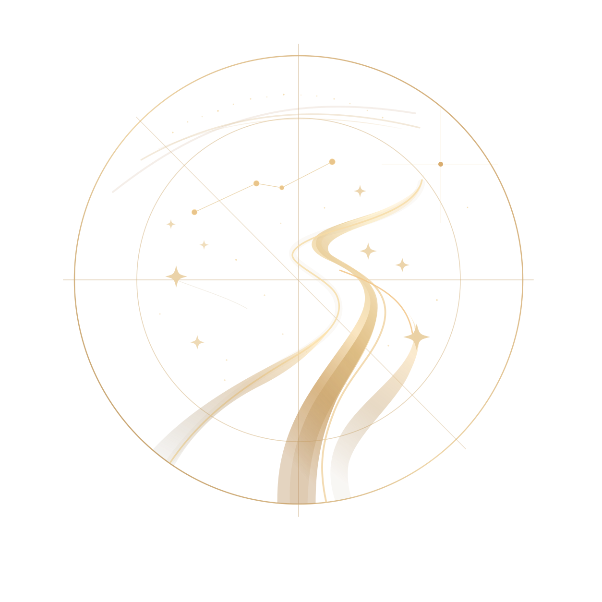

一款作品的旅程，不必由一个人独自完成。这里是 Shiorivia 的开源开发、文档与社区协作空间。
两套独立版本，共享创作理想。阅读源码、报告问题，或从你的第一个贡献开始。
REPOSITORY / LOCAL
本地优先的 AI 对话与叙事工作室，包含文件与工程能力。
REPOSITORY / CLOUD
浏览器优先的云端版本，以 IndexedDB 和加密 BYOK 为核心。
无论是修复一个问题、完善一条翻译，还是记录一种新的使用方式，都值得被认真对待。
提交问题、分享复现步骤，帮助项目变得更加稳定。
阅读贡献规范，为功能、测试与技术文档提交改进。
帮助五种界面语言保持自然、清晰与一致。
尊重创作者、维护彼此的权益，以可追溯的讨论和审慎的代码变更，共同守护这条星路。